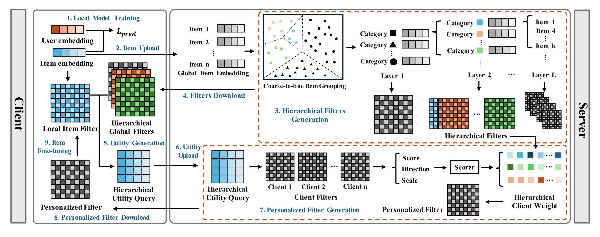
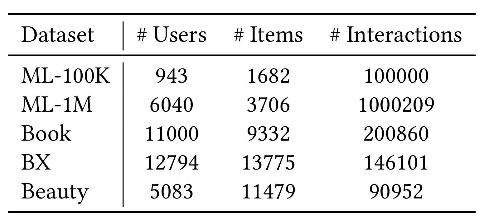
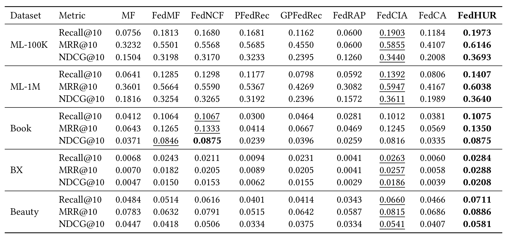
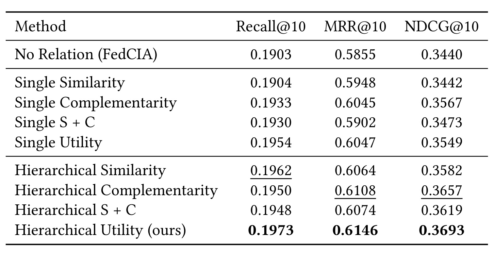
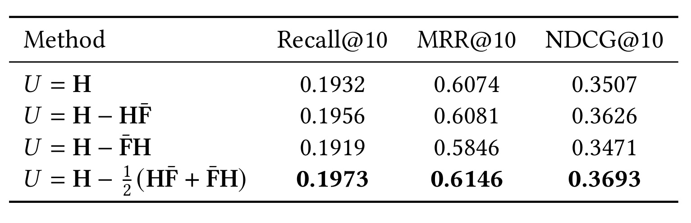
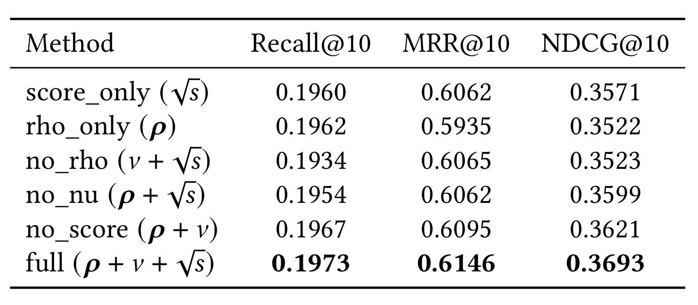
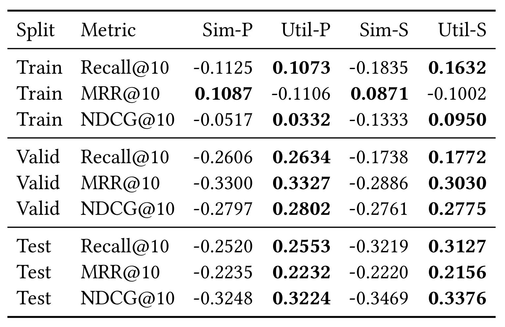
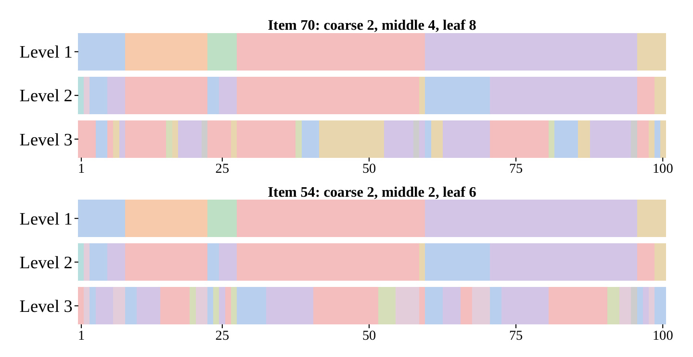
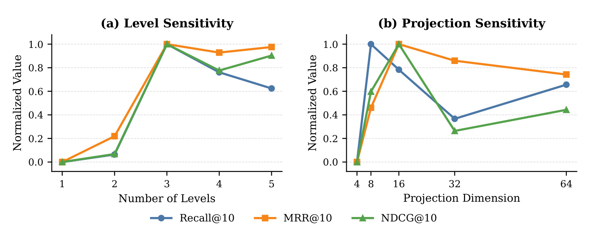
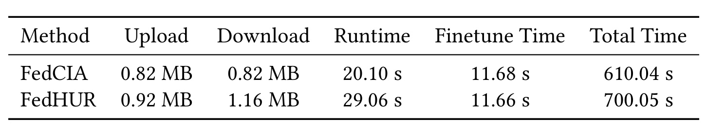

FedHUR：面向个性化联邦推荐的层级效用关系学习
FedHUR 研究联邦推荐中的个性化聚合：目标客户端应该借用哪些其他客户端的信息，且这种关系应如何随物品群和训练状态变化。一作 Mingzhe Han 来自复旦大学，合作机构包括微软亚洲研究院，Hansu Gu 为独立研究者。论文首版公开于 2026 年 9 月 10 日（UTC），本轮阅读日期为 2026 年 9 月 14 日（Asia/Shanghai）。论文链接：arXiv:2609.11632。官方代码仓库 已核验存在，本笔记依据原论文完整十二页，未独立运行复现。PDF 标注 CIKM 2026，会议信息未另作 proceedings 核验。
用单一全局关系描述客户端，难以表达推荐兴趣的层级性与多粒度差异；而参数相似或互补，也不能直接说明聚合后是否真的改善预测。真正需要的是在不同物品粒度上，找到能补足目标客户端当前信息缺口的协作对象。
1. 背景和问题
联邦推荐将用户交互保留在客户端，通过交换可共享的模型信息完成协作。它与普通联邦分类任务的一个区别，是模型参数天然分成用户侧与物品侧：前者直接描述本地用户，通常不上传；后者在不同客户端之间具有共同的物品标识，适合用作协作接口。本文让每个客户端拥有一批用户及其交互，本地学习用户、物品嵌入，再将物品信息上传给服务器。因此，论文里的客户端并不等价于单个用户，也不能把一百客户端实验直接理解为一百台手机各自只有一个人的历史。关系学习发生在这些数据分片之间，最终改善的是分片内用户的推荐。
传统聚合按照数据量或统一权重平均客户端参数，相当于为大家提供一份公共答案。推荐数据的异质性会使这种做法受到限制：两个客户端即使有相近的样本量，接触的物品、用户偏好及长尾覆盖仍可能很不同。对某个目标客户端有帮助的外部信息，未必也适合另一个客户端。某个数据量很大的客户端还可能仅在少数流行物品上提供重复信息，不能弥补目标客户端尚未学好的区域。FedHUR 关注的就是如何把聚合权重从“谁上传了多少”推进到“谁提供了当前需要的协作结构”。
已有个性化聚合通常先计算客户端关系，再将关系转成权重。例如，参数接近可以被看作相似兴趣的证据，参数互补则试图引入目标客户端没有的信息。论文回顾的 FedCA 同时考虑相似性和互补性，FedRAP 划分共享与个性化物品成分，GPFedRec 借助图结构刻画关系。这些路线说明聚合对象与关系设计都很重要，但相似和互补仍然是事前假设。相似参数可能只是重复了已经学会的信息；距离较远的参数也可能来自噪声，无法提供有用补充。不能只看两个模型在几何空间的关系，就断言把它们混合会使排序指标提高。
第一项缺口是关系的粒度。引言用体育与电影兴趣说明，同一对用户可能在一个领域互相帮助，却在另一个领域产生冲突。对整张物品嵌入矩阵算一个相似度，会把这两种情况揉成一个数字；它可能掩盖局部有价值的协作，也可能把局部错误扩散到其他物品。反过来，如果每个物品都单独学关系，推荐数据的稀疏性又会让估计非常不稳定。少数交互不足以判断哪些客户端值得相信，孤立的物品关系还会冗余或相互矛盾。需要在共享稳定性与局部分辨率之间建立可控的层级结构。
第二项缺口是效用的可计算性。最直接的办法是逐个尝试候选客户端：先把候选信息聚合进目标模型，再评估目标模型是否变好。这个定义贴近实际目的，却意味着大量模型构建、本地验证和通信。若每个目标都要比较全部候选，客户端数增大时成本会很快上升；若又在多个物品粒度上重复，开销进一步放大。使用验证集误差直接学习每轮聚合关系，还需要处理验证数据的使用边界。本文明确将构造关系所需计算限制在训练信息上，验证和测试数据只用于评估及事后相关性分析。
作者采用物品图滤波的视角化解这两项困难。物品嵌入的两两内积可组成滤波器，它描述协作信号在物品之间如何传播。将物品先聚成粗组、再在粗组内部继续细分，就能同时观察宽范围的公共关系和局部差异。相比直接平均嵌入，聚合物品间关系强调的是协作结构，而不是特定嵌入坐标本身。但这也引入了矩阵尺寸、稀疏性和低秩实现问题，不能只因为图滤波有直观解释就认定其代价较低。本文沿用 FedCIA 的协作信息聚合思路，把主要创新放在关系及权重如何产生。
效用查询则从另一个角度看当前模型：全局滤波器作用于本地物品信号后，哪些结构尚未被良好重构？如果能提取这样的残差信息，就可以把它当成检索需求，寻找候选客户端中与需求相匹配的成分。这使“逐个聚合后验证”变成“先构造查询，再批量匹配候选”。重要的是，查询来自一个可求导的局部嵌入重构目标，不是直接来自测试集的排序提升。本文的效用首先是这一代理目标下的方向性信号；它与真实推荐收益是否一致，仍需要实验验证，不能仅凭名字确定。
这篇论文对于推荐工程的价值，在于把个性化共享从静态相似度变成带状态的需求匹配。客户端当前已经被全局信息覆盖的内容，会在查询里受到扣减；同一个候选在不同层级、不同训练轮次可以获得不同权重。它也给出了比较清楚的检验路径：既要看完整模型超过哪些基线，又要固定骨干与聚合对象，只替换关系类型；还应比较效用分数与聚合后指标的相关性，并报告通信代价。只有这几层证据相互配合，才能区分“框架本身较强”和“所提出的关系确实更好”这两种结论。
不过，本文没有改变隐私研究的基本问题。用户参数和原始交互留在本地，只描述了数据流边界；上传的物品嵌入、滤波器派生信息和效用查询仍可能携带用户偏好统计。论文说可以结合差分隐私或安全聚合，但没有给出正式隐私预算、攻击实验或完整兼容性实现。因此本文适合被理解为联邦场景下的性能和聚合机制研究，而不是已经证明敏感信息不会泄漏的隐私方案。后续分析会把它的机制收益与这类尚未验证的部署条件明确分开。
从任务范围看，FedHUR 仍然是协同过滤的联邦扩展，没有引入大语言模型、文本语义或生成式物品标识。组结构由可交换的物品表示产生，收益也在传统前十排序指标上测量。因此它对大模型个性化的启发只能来自关系组织与需求检索这一抽象原则，本文本身并未验证参数高效微调、多任务语言模型聚合或代理记忆迁移。
2. 方法
2.1 本地训练与层级关系挖掘

Figure 1 从左侧客户端到右侧服务器画出一轮协作。首先客户端使用本地交互训练，用户嵌入留在左侧，只把物品嵌入发送到服务器。服务器由所有客户端的物品信息计算公共嵌入与滤波器，并沿图中上半部分的聚类树生成多层物品组。粗层覆盖较大的物品区域，细层继续分解已有父组。这里的树来自当前全局嵌入上的聚类，不是外部人工给定的商品类目树；图中 Category 只是组的示意，不能据此认为作者依赖了额外类目标签。
图中间的往返通信随后把层级全局滤波器发送给客户端，客户端结合自己的局部滤波器生成效用查询，再将查询上传。下半部分由服务器完成候选匹配：查询和各客户端滤波信息产生方向、尺度及总匹配分数，评分器将这些特征转成层级聚合权重。不同层级的残差滤波器最终组成个性化滤波器，返回客户端做物品侧微调。因此整个流程至少包括物品上传、公共层级信息下发、查询上传、个性化结果下发几个消息阶段，不能把它简化为一次上传后立即平均参数。
图中的预测损失和微调也承担不同任务。前者利用本地真实交互学习推荐，后者要求物品嵌入所隐含的关系接近服务器提供的个性化滤波器。用户信息在这两个阶段始终由本地持有。框架图展示的是训练期协作，并不意味着每次线上打分都要向所有客户端发检索请求；完成训练与微调后，推荐仍由本地模型执行。另一个时序细节来自 Algorithm 1：当前轮先用上一轮评分器生成权重，再更新共享评分器。把它写成先用当前候选训练后立刻对同批候选打分，会改变原算法的学习顺序。 本地目标及全局统计对应原式（1）与（2）：
符号解释：$k$ 是客户端，$K$ 是客户端总数，$\mathcal D_k$ 是本地交互集，$u,i,y_{ui}$ 分别为用户、物品及交互标记，$R$ 是推荐函数，$\ell_{\mathrm{rec}}$ 是逐样本损失，$\theta_{u,k}$ 是本地用户参数，$E_k$ 为本地物品嵌入矩阵，$E_g$ 为平均嵌入，$S_g$ 为全局物品滤波器，转置记作 $\top$。全局滤波器是各客户端 Gram 矩阵的平均，不是平均嵌入的 Gram 矩阵；交换求平均和相乘的顺序会丢掉跨客户端变化项，得到不同算法。 服务器使用 $E_g$ 做逐层 k-means。每组嵌入是组内物品嵌入的均值，粗层滤波器取组嵌入的内积；细层在局部内积上继承父层公共对角项。原式（3）至（9）的核心构造可合并为：
符号解释：$G_b^{(\ell)}$ 为第 $\ell$ 层第 $b$ 个物品组，$e_{k,i}$ 为客户端 $k$ 的物品向量，$z$ 为组均值，$F$ 为组级滤波器，下标 $g$ 表示全局平均；细层组 $b,c$ 都属于上一层父组 $a$，$\beta_{\ell-1}$ 控制继承强度。粗层没有父组项，后续层才执行递归。父层传下的是公共滤波器对角值，不能误写成任意两个父组的跨组关系，也不是每个客户端自己的父滤波值。
2.2 局部重构方向与投影检索
对任意层与组暂时省略索引，令本地表示为 $Z$，本地滤波器为 $H=ZZ^\top$，公共基准为 $F_g$。作者不是穷举候选重训，而是分析本地信号经滤波后的重构误差。式（10）至（16）的关键关系为：
符号解释：$J$ 是局部嵌入重构损失，$F$ 是待更新的滤波器，$\|\cdot\|_F$ 为 Frobenius 范数，$\nabla_F$ 是对矩阵的梯度，$\operatorname{Sym}(A)=(A+A^\top)/2$ 为取对称部分，$U$ 是效用查询。对称化适应物品滤波器的对称结构。单用 $H$ 没有扣除公共模型已覆盖的信息；两个乘积则分别反映信号与当前滤波器的交互。这个定理证明的是对称滤波器空间内的重构下降方向，没有证明任意有限幅度聚合都提高 NDCG，更没有把重构误差等同于测试排序损失。 直接上传完整 $U$ 可能昂贵，于是使用共享随机投影，将查询每个方向归一化后匹配候选表示。对应式（17）与（18）：
符号解释：$P^{(\ell)}$ 是共享随机投影矩阵，$Q_k^{(\ell)}$ 是目标客户端上传的压缩查询，$\operatorname{Norm}_q$ 将每一列投影方向归一为单位二范数；$j$ 是候选客户端，$Z_j^{(\ell)}$ 为其对应层的组表示，$s$ 是总匹配分数。分数度量候选沿查询子空间的能量。但平方范数对正负方向具有不变性，不能直接当作有符号的梯度内积；投影和列归一化还会改变原方向的幅度信息。这一近似最终依靠消融和相关性支持，而非由前面的重构定理自动保证。
2.3 共享评分器与分数修正
总匹配分数会掩盖能量集中在哪些投影方向，也受到候选表示尺度影响。作者给共享 MLP 输入方向匹配、尺度以及总分平方根，式（19）写作：
符号解释：$q_{k,t}^{(\ell)}$ 为查询第 $t$ 列，$\rho$ 收集各方向匹配范数，$\nu$ 是按矩阵尺寸缩放的候选嵌入幅度，$m_\ell,d$ 分别为表示矩阵的行数与嵌入维度；方括号表示特征拼接，$\operatorname{Norm}_j$ 表示在候选客户端维度归一化，$x$ 为评分器输入。这里的 $\rho$ 是向量二范数，不是直接把每方向再平方；总分 $s$ 才是所有方向平方能量之和。论文没有把每一种归一化的数值稳定参数展开为完整规范，复现时应核查代码。 评分器学习的监督信号仍然是归一化直接匹配分数，原式（20）与（21）为：
符号解释：$f_\psi$ 是参数为 $\psi$ 的共享 MLP，$\lambda$ 控制修正幅度，$\operatorname{Std}_q$ 是对候选索引 $q$ 计算直接分数标准差，$r$ 为修正后分数；这里的候选索引 $q$ 与上一式的查询列向量不同。跨层和跨组共享同一评分器，意在学习通用分数修正规则。它并非由验证集上的真实收益训练出来的价值网络；当前轮先应用上轮评分器，再用本轮直接分数更新，因此带有跨轮学习与共享平滑的作用，但论文没有单独给出足以分解这几种作用的消融。
2.4 残差聚合与本地滤波器匹配
修正分数先变成每层权重，再聚合相对公共滤波器的残差。最后将组级残差映射回物品空间，并让本地物品嵌入拟合个性化结果。式（22）至（25）为：
符号解释：$\tau$ 为 softmax 温度，$\alpha$ 为候选权重，$R_k^{(\ell)}$ 是层级残差，$L$ 是层数，$\beta_\ell$ 为层贡献，$\operatorname{Map}_\ell$ 将对应物品组关系赋给组内物品对，$\widetilde S_k$ 为返回客户端的个性化滤波器。最后一个目标只优化物品嵌入，用户参数继续保留本地。先减公共基准再加回公共全物品滤波器，避免把每一层都当作独立完整模型重复叠加。论文还允许大数据集粗层采用参数聚合加速，因此严格复现应记录何处开启该分支；它不应被省略成所有层始终使用同一种矩阵计算。
温度过低会使权重过于集中，代理效用的误差可能被放大；温度过高又接近均匀平均，使个性化残差变小。这是由公式可推导的行为，论文没有给出所有温度条件的充分实验。整体训练完成后，客户端使用微调后的嵌入做推荐，而非保存一个逐请求检索所有客户端的服务。对于动态新增物品、部分客户端缺席或层级聚类变化，映射和查询的一致性都需要额外维护，本文实验尚不足以证明这些条件下同样稳定。
3. 实验结果
3.1 数据与评测口径

Table 1 的每行是一个公开推荐数据集，列分别是用户数、物品数和交互数。ML-100K 有九百四十三名用户、一千六百八十二个物品和十万条交互；ML-1M 约六千用户、三千七百物品和一百万交互。Book、BX 和 Beauty 覆盖图书及美妆等场景，物品规模接近或超过一万，但交互更稀疏。这里的规模差异对方法有直接影响：物品更分散时，单个客户端学习到的物品关系更弱，组级聚合能否形成稳定查询尤为重要；同时全物品滤波矩阵的尺寸也随物品数增长，不能把小电影数据集上的运行代价直接外推到更大词表。
作者把各数据集划分为训练、验证和测试，并将用户分到一百个客户端。原文没有在正文给出全部划分比例、分片随机种子及每客户端用户分布，因此表中的总用户数不能说明每个分片同质或等大小。尤其 ML-100K 用户很少，一百个客户端下每片数据量与其他数据集差异明显，结果并非固定本地样本量下只改变领域的受控比较。该表证明覆盖了五种数据规模与稀疏条件，但没有真实设备在线、客户端退出或通信不稳定的证据，不能把离线分片实验等价为实际联邦部署。
所有方法报告 Recall@10、MRR@10、NDCG@10。正文明确采用全物品排序，将正例与全部物品比较，因而不能直接与一个正例加九十九负例的采样评测数值横向比较。Recall 衡量前十名覆盖正例的比例，MRR 强调相关结果出现的位置，NDCG 对较靠前的命中给予更高折扣权重。多正例下 MRR 的具体归约及已见物品屏蔽方式仍应以复现代码为准，本文不凭指标名字补造细节。实现使用 PyTorch、Tesla T4 和 Adam，FedHUR 的骨干是 MF；学习率、权重衰减与批大小在共享候选空间搜索。共享搜索空间能减少调参范围不公平，却不能替代多随机种子误差或显著性检验。
3.2 总体性能与同框架归因

Table 2 横向比较 MF、七个联邦基线与 FedHUR，纵向按数据集分组三个前十排序指标。加粗表示最优，下划线表示次优。ML-100K 上，FedHUR 的 Recall 从 FedCIA 的零点一九零三提高到零点一九七三，MRR 从零点五八五五提高到零点六一四六，NDCG 从零点三四四零提高到零点三六九三。NDCG 的绝对增量是零点零二五三，按表中数值计算相对约百分之七点三五。这个提升发生在全物品排序口径，不能被改写成百分点级准确率，也不能与其他评测设置的采样命中率相比。
数据集之间的改进幅度明显不同。ML-1M 的 NDCG 为零点三六四零，对比 FedCIA 的零点三六一一，相对提升约百分之零点八零；BX 的 NDCG 从零点零一八六提高到零点零二零八，绝对差较小，但相对约百分之十一点八三。这提醒我们同时阅读绝对差与相对差：稀疏数据上很低的基数会放大相对改善，而电影数据的较高指标也不意味着任务更容易或更有商业价值。Beauty 的三项指标均超过对应最强基线，可以支持跨数据集的普遍竞争力，却还不能支持每类用户、每类物品都获得一致收益。
Book 是必须保留的例外。FedHUR 的 NDCG 为零点零八七五，和 FedNCF 完全并列；Recall 与 MRR 则略高于 FedNCF。因此更准确的结论是整体最优或并列最优，而不是十五个指标全部严格领先。主表也没有误差线、重复运行方差或显著性标记，零点零零几的差距需要谨慎解释。作者自己指出这些模型使用的骨干、上传信息及聚合对象并不相同，因而主表证明的是完整方法之间的结果，不能把全部差额都归功于效用关系。要判断真正改进来源，应继续看固定框架下的关系替换实验。

Table 3 把聚合框架固定为 FedCIA 路线，比较无关系平均、单层相似、单层互补、两者组合、单层效用，以及对应的层级版本。这样比主表更接近回答“关系设计本身是否有价值”。无关系基线的 NDCG 是零点三四四零，单层相似几乎不变，单层互补提高到零点三五六七，单层效用是零点三五四九。也就是说，单层效用并没有在所有指标上压过互补：它的 Recall 和 MRR 稍高，但 NDCG 更低。论文总体叙述不能覆盖这项具体交叉，真正稳定占优的是加入层级后的完整组合。
层级相似、层级互补和层级相似加互补的 NDCG 分别为零点三五八二、零点三六五七和零点三六一九，完整层级效用达到零点三六九三。相对于同表最强替代关系层级互补，它的 NDCG 相对优势约百分之零点九八，明显小于对无关系基线的百分之七点三五。这一差别说明总收益包含两部分：从统一平均转向更细关系本身很有价值，效用信号在此基础上进一步改善。若只引用对无关系基线的差值，就会夸大效用打分相对其他合理关系的独立优势。
从单层到层级，各关系的主要指标总体更好，支持多粒度建模，但表中仅有 ML-100K 的受控结果。它没有展示每个数据集上的相同关系替换，也没有分离聚类结构、父层继承与层数带来的各自贡献。我们可以据此认为层级和效用的组合在所测条件下有效，却不能推断体育和电影这类语义群上已经逐一验证了有益与冲突关系。对工程迁移而言，先在同一骨干、相同通信预算中复现层级互补与层级效用的差距，比只复现一个最弱基线到完整模型的差距更有决策价值。
3.3 查询和学习评分器消融

Table 4 固定其余流程，仅改变查询构造，比较直接用本地滤波器、扣除右乘公共滤波器、扣除左乘公共滤波器和完整对称形式。直接使用本地结构时，NDCG 是零点三五零七；加入右乘残差提高到零点三六二六，而左乘形式为零点三四七一；对称查询达到零点三六九三，并在另外两项指标上同时最优。这个结果支持“本地有些什么”和“公共模型尚未覆盖什么”是两种不同信号，也支持在对称滤波空间里同时考虑两侧作用，而不是任意选一个矩阵乘法顺序。
这里两种单侧形式不能交换，是因为矩阵乘法一般不满足交换律。虽然本地和公共滤波器分别对称，它们的乘积也不必对称；所以扣除左乘与右乘所得查询会不同。前面的梯度推导给出先计算负梯度再对称化的理由，表中三个指标的一致提升又提供了经验支持。两者合在一起，比仅凭“对称更合理”的口头判断有说服力。但经验支持仍限于所测配置：表中没有误差范围，也没有证明对称投影后的所有候选方向都具有正向测试收益。
另一个需要区分的因素是归一化和后续打分。此表改变了查询，但查询随后还经过随机投影、列范数归一化与平方能量匹配。最终性能不只是原始矩阵残差质量的读数，还包含这些下游步骤对不同查询的处理结果。要进一步验证理论与实现之间的对应，可以比较有符号残差内积、未归一化投影及当前平方范数版本，并控制同等通信量。原文没有这些额外实验，因此不能把此表当作从重构梯度到完整检索分数的严格等价证明；它证明的是当前流水线中这一查询构造的实际优势。

Table 5 比较评分器看不同特征时的结果。只用总分平方根时，Recall 为零点一九六零，MRR 为零点六零六二，NDCG 为零点三五七一；完整方向、尺度、总分组合分别达到零点一九七三、零点六一四六、零点三六九三。去掉总分后仍有零点三六二一的 NDCG，优于只用总分，说明方向级匹配分布及嵌入尺度携带了有用结构。去掉尺度的 NDCG 是零点三五九九，去掉方向则降到零点三五二三，从该配置看方向特征的缺失更不利。
不能把这个表概括成“任何一种方向或尺度特征单用都全面优于总分”。仅用方向的 NDCG 是零点三五二二，低于总分单用的零点三五七一；MRR 也更低，只有 Recall 略高。表里没有独立的尺度单用行，虽然正文讨论了尺度作用，仍不能虚构一个未报告的结果。最有证据的判断是组合信息最好，去掉其中成分会削弱完整系统，而不同指标对单个成分的响应并不一致。这个边界与推荐的多指标取舍有关，也提示不要只取某一行最高的单列去讲机制。
评分器的目标是拟合直接分数，而输入又含有总分平方根，从表达能力看甚至可以学习接近平方映射。因此这张表并没有直接证明它学到了新的真实效用标签。上一轮模型、跨层共享、特征归一化与修正项共同构成了一种带结构的分数处理方式，性能提升可能来自这些因素的联合作用。若要说明其中哪部分带来泛化，应再增加同轮与跨轮评分器、冻结评分器、纯解析变换以及真实独立收益标签等控制。本文尚未给出这种分解，笔记将它保守地称作学习式分数修正，不将其提升为已校准的聚合收益预测器。
3.4 效用相关性与层级行为

Table 6 直接检查事前分数能否与事后结果对上。行按训练、验证和测试划分，再列出三个指标；列分别为相似分数与效用分数的 Pearson 和 Spearman 相关性。验证集上效用的 Pearson 约为零点二六至零点三三，测试集约零点二二至零点三二，而相似分数多数呈负相关。例如测试 NDCG 的效用 Pearson 为零点三二二四、Spearman 为零点三三七六，相似分数对应为负零点三二四八和负零点三四六九。两类相关性同时改善，支持效用信号对线性关联和相对排序都比该相似基线更贴近聚合后表现。
但效用相关性并没有接近一，不能把它当成精确收益预测。即使总体相关为正，仍会有大量候选的排序或收益判断出错，更不能推出每个客户端都受益。训练集还出现明显反例：MRR 的效用 Pearson 为负零点一一零六、Spearman 为负零点一零零二，而相似分数在这两列为正。训练 Recall 和 NDCG 的效用虽正，强度也不高。正文强调验证和测试相关为正是有依据的，但若扩写成全部划分、全部指标都正相关，则违背原表。
这些结果也不能被误解为方法使用验证集训练关系。论文明确关系计算仅依靠训练信息；验证和测试在这里用作事后审计，回答代理效用是否与未见交互表现一致。这是有效性证据，不是新增监督来源。表中未给出相关计算所涉及客户端对数量、置信区间与不同轮次分布，因而难以判断相关性估计的方差和时间稳定性。对实用价值更关键的问题，是高分候选中的错误比例及这种错误会造成多大负迁移；单一全局相关系数不能替代这些检查。

Figure 2 选取物品七十和五十四，各自画出三级关系。每个面板的三行对应从粗到细的层级，彩色区段表示该层使用的关系划分，横向标出一至一百的位置。上方面板的物品归属为粗组二、中组四、叶组八，下方面板为粗组二、中组二、叶组六；两者共享粗层但在更细层分开。因此图真正可见的是同一粗范围可以随着层级细化进入不同局部结构，而不是一条关系在所有物品上保持不变。它直观说明算法确实实现了分层组织。
这张图的颜色是关系或分组标记，不是连续收益热力图，不能通过颜色深浅判断哪个候选更有价值。原图及 caption 对横轴实体的解释不够充分，尽管刻度达到一百与客户端总数一致，笔记不据此强行断言每个色块就是一个物品或一个客户端的真实增益。作者将其作为层级关系可视化，能支持结构随层变化的解释；但两个随机示例没有显示失败样例、分数大小或对应指标改善，不能单独证明粗到细的划分一定具有语义一致性或降低负迁移。它应与关系消融共同阅读，承担结构展示而非收益因果证明。
两幅面板在粗层呈现相近的宽色块，细层则出现更多狭窄区段，展示了共享父结构与局部细化能够同时存在。不过，图没有说明色块宽度是否与聚合权重成正比，也没有给出颜色到客户端身份的完整映射，所以不能把较宽区域解读为某一候选占据更大权重。真正判断权重是否聚焦于有用客户端，还需要把每层分数、归一化权重及聚合后的局部指标连起来；当前示例只完成了结构这一环。作者也没有提供随机抽样重复次数，这使两例是否代表总体仍然未知。

Figure 3 的左面板比较一至五层，右面板比较投影维度四、八、十六、三十二和六十四，三条线对应 Recall、MRR 和 NDCG。每种指标分别归一化到零至一，所以纵轴不是原始指标，也不能比较不同颜色曲线之间的绝对水平。左面板三层同时达到本次扫描的高点，继续加深后各指标不同程度回落，说明层数并非越多越好。这个观察与过细分组可能增加噪声或冗余的解释相容，但图没有直接测量噪声大小，因此后者仍是作者的机制解释。
右面板比“提升后趋稳”更复杂：Recall 在投影维度八达到最高，MRR 和 NDCG 在十六达到最高；三十二时出现明显下落，到六十四又有部分回升。没有一个维度对所有指标形成简单单调支配。我们可以据此支持中等投影维度已能取得好结果，却不能声称更大投影一定更稳。因为每条指标被独立缩放，视觉上较大的跌幅也可能对应较小的绝对差；原图没有给出原始值和误差区间，无法估算这种回落的实际影响。工程选择应在原始指标、随机种子稳定性和查询字节数之间折中，而不能从归一化曲线直接制定统一的最优维度。
独立归一化还意味着某个端点落在零，并不代表原始 Recall 或 NDCG 为零，只表示它是该条扫描曲线中的低点；同理，三层处取一只代表扫描范围内最大值，不能说明推荐达到了完美排序。左右面板的纵向高度也不能互相当作增益幅度比较，因为两个超参数扫描可能拥有不同原始上下界。原图没有交叉扫描层数与投影维度，因此三层配合某个投影维度是否是联合最优，也不是单因素敏感性能够直接确认的结论。
3.5 通信与运行时间

Table 7 把额外成本直接列出来。FedCIA 的上传与下载均为零点八二 MB，FedHUR 分别为零点九二和一点一六 MB。按表中两方向相加计算，通信量从一点六四增加到二点零八 MB，约提高百分之二十六点八三，与作者所述约百分之二十七一致。上传相对增加约百分之十二点二，下载增加约百分之四十一点五，二者并不对称。这意味着层级信息和个性化滤波器下发是值得单独关注的方向，不能只强调投影压缩了查询上传，就声称整个通信链路更省。
运行时间列从二十点一零秒增至二十九点零六秒，相对约增加百分之四十四点六；微调时间几乎不变，分别为十一点六八与十一点六六秒。总时间从六百一十点零四秒增至七百点零五秒，约增加百分之十四点七六。单独的 Runtime 列、Finetune Time 列与总时间不能直接相加得到彼此，原表没有将所有聚合轮数和计时范围展开，所以应沿用作者各列口径，不自行构造轮次乘法。可以确定的是，方法用额外通信和计算换取更好的离线效果，不能将它概括为比 FedCIA 更快或更省。
作者认为成本增幅有限，这是一种相对基线与当前实验规模的判断。物品数量更大时，全物品滤波器、组级映射和候选匹配的内存压力都需要重新计算；客户端数增大时，目标与候选两两配对也会增加服务器工作量。论文讨论可采用 FedCIA 的低秩压缩，并在大数据集粗层允许参数聚合加速，但该表并未系统扫描压缩率、候选数、设备带宽与异构延迟。因此“不到两倍通信”是这套设置下的观察，不是所有部署配置的普遍上界。对于带宽受限设备，应分别测试上下行、掉线重试与端侧微调，而非只复用服务器单卡测得的总秒数。
整体上，主表、固定框架对照、查询与特征消融、相关性和效率五类证据构成了较完整的离线研究链。它们共同支持层级效用关系的研究价值，也明确暴露了代理效用不完全可靠、细节消融集中于单数据集以及收益需要付出成本的边界。论文没有线上业务实验、置信区间或隐私攻击结果，这些缺口都不能由完整的离线表格自动填补。
4. 总结
FedHUR 最有启发的地方，是将客户端选择表述为需求驱动的检索。目标客户端不只是问谁和自己相似，而是从当前公共滤波器的重构残差中产生一个查询，寻找外部信息中能覆盖这些方向的部分。层级结构进一步让这种需求落在不同物品范围，不把整张物品空间压成一个固定关系。由此，个性化聚合成为公共结构加局部残差的组合，训练期协作与推理期推荐保持相对清晰的分工。对于推荐研究者，这比只增加一个复杂聚合网络更值得借鉴，因为每个步骤都有可审计的输入和输出。
我的判断是，本文的证据足以支持开展受控复现，尚不足以跳过成本与风险评估直接替换现有聚合方案。第一项限制是效用代理的理论边界：重构损失的对称负梯度并不等同于排序收益，平方投影又丢失方向符号，因此理论与最终指标之间仍有经验环节。第二项限制是受控消融和相关性主要集中于 ML-100K；五数据集主表提供广度，却不能说明每个模块都在所有领域具有同样贡献。第三项限制是缺少随机种子方差与显著性证据，尤其面对与最强替代关系不足百分之一的相对差距时，需要估计收益是否稳定。第四项限制是通信、运行时间均增加，且实验仍是百客户端离线分片，没有真实异构设备和网络条件。
还必须单独保留隐私限制。原始交互不上服务器不等于上传信息不会泄漏，效用查询又是由本地滤波器派生出来的新接口。论文没有给出差分隐私预算，也没有验证成员、属性或交互推断攻击。安全聚合若隐藏了单个候选的信息，还会与服务器逐客户端计算分数的需求形成实现张力，不能把“可以结合”看作已经证明无缝兼容。这些问题不否定关系学习本身，但会决定它适合在哪些可信边界内使用，以及是否需要增加端侧裁剪、噪声和安全计算开销。
后续首先应复现固定骨干下的层级互补与层级效用，而不仅比较无关系平均与完整模型。这样能估计真正来自效用信号的独立收益，并对小幅差异做多种子统计。其次应审计查询到打分的转换，加入有符号残差匹配与不同归一化对照，同时报告高分候选造成负迁移的比例；全局正相关不足以说明客户端尾部是否安全。第三应固定上传下载预算比较层数、投影维度和低秩压缩，在大物品词表、部分参与和新物品加入时检查映射一致性，确定论文里的中等维度优势能否稳定延续。第四应对评分器做跨轮与同轮、共享与独立、解析与学习式变换的消融，澄清它拟合代理分数为何能改善最终推荐。
复现还应严格保留全物品排序口径、用户到客户端划分、已见物品屏蔽、多正例指标实现、公共滤波器计算顺序以及上轮评分器时序。任何一处变化都可能改变表中数值，尤其不能将平均 Gram 矩阵替换成平均嵌入的 Gram 矩阵。最终应以性能、上下行通信、端侧计算及隐私机制共同构成的约束判断是否值得采用。FedHUR 展示了把协作关系细化为层级需求匹配的一条明确路线；它目前最扎实的贡献是离线受控条件下的性能与机制证据，继续推进需要把代理方向的可靠性和部署条件纳入同一套验证。